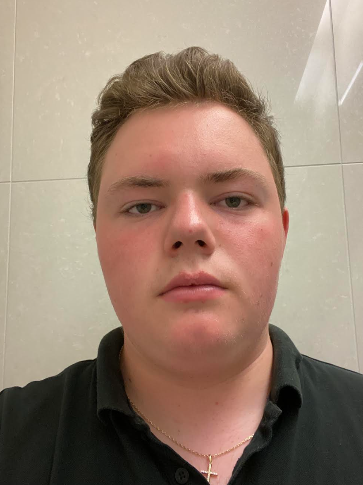

Som študentom druhého ročníka na SPŠ IT a G v Kysuckom Novom Meste. Moja cesta za programovaním začala zvedavosťou a dnes sa naplno venujem tvorbe webových aplikácií a vývoju 2D hier. V mojom kóde sa stretáva logika Pythonu s kreativitou CSS a JavaScriptu.
Okrem vývoja softvéru ma fascinuje hardware a sieťové technológie. Mimo klávesnice rád trávim čas v prírode na túrach alebo ponorený do sveta videohier, ktoré sú mojou najväčšou inšpiráciou. Verím, že každý kód má mať svoj zmysel a každý projekt je novou príležitosťou naučiť sa niečo prevratné.
